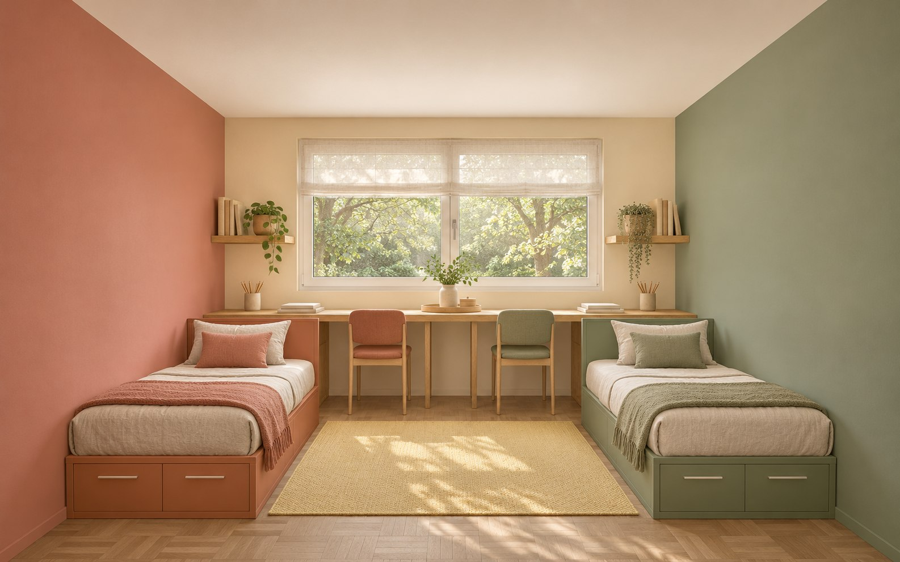
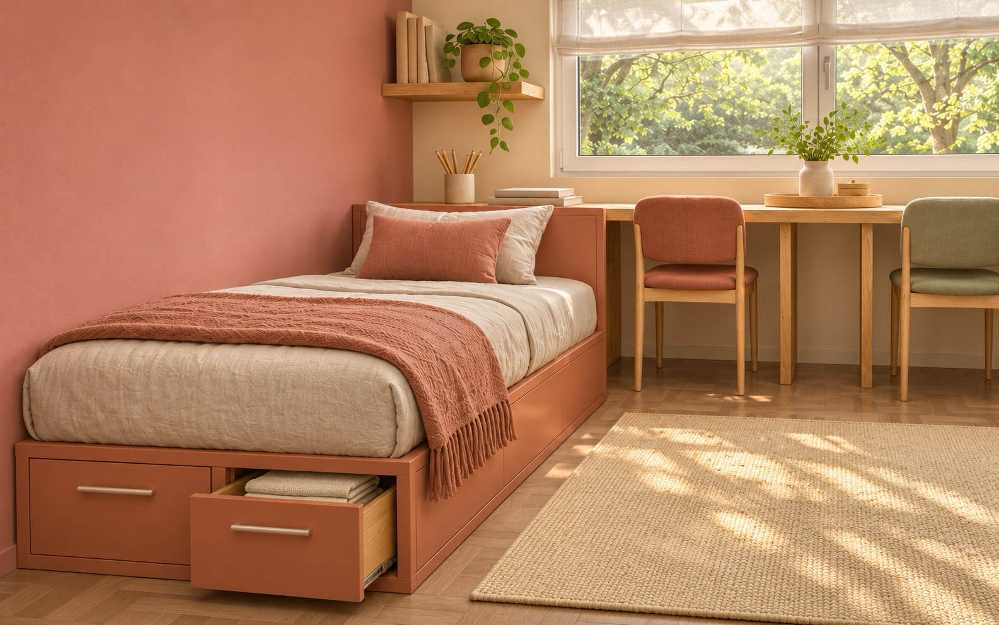
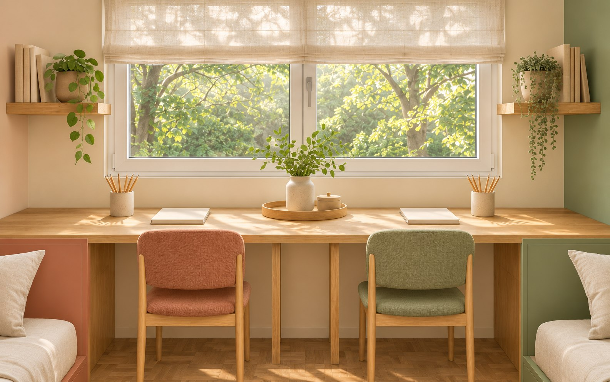

Личная территория
Место, где вещи можно оставить так, как хочется самому. Своя полка, ящик и выключатель.
Равные места у окна, отдельный свет у кровати и общая середина для игры. Комната без деления на «старшего» и «младшего».

Визуализации сгенерированы ИИ для концепта; это не фотографии реализованного объекта.


Место, где вещи можно оставить так, как хочется самому. Своя полка, ящик и выключатель.
Рабочие места стоят рядом с окном. Свет на столах включается независимо — без соревнования за лучшее место.
Середина комнаты остаётся свободной. Для конструктора и настольных игр — общая низкая тумба на колёсах с фиксаторами.
Две кровати на одном уровне. Проход между ними даёт каждому доступ к своему месту без пересечения чужого.
Пример — концепт для портфолио. Площадь 18 м² условная. Габариты мебели и проходов проверяются на обмерном плане.
Метка личного хранения без надписей на фасаде.
Второй личный блок, равный по насыщенности.
Моющаяся стена и нейтральный пол.
Вместо декора «на возраст» — мебель, которую можно перенастроить. Столы и сиденья подбираются по росту каждого ребёнка.
Пример — концепт для портфолио. Расчёт на 18 м², без мебели и ремонта.
Итого · 3 500 ₽/м²63 000 ₽
Визуализация — от 30 000 ₽, отдельно. Размеры уточняются после обмера.